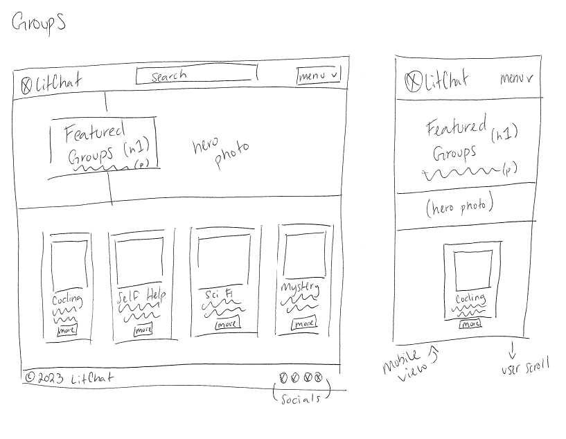
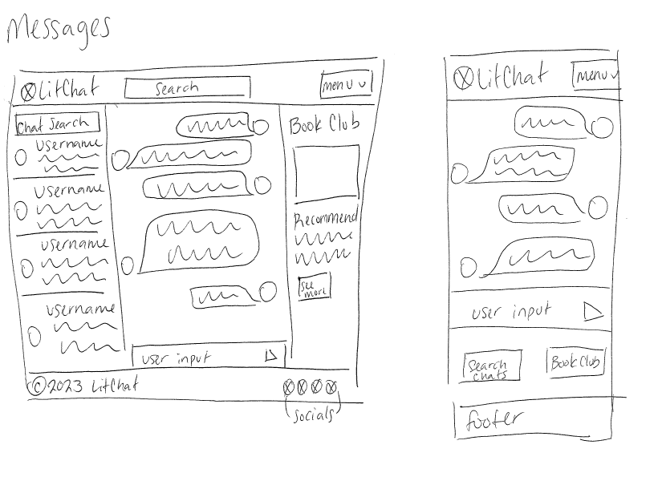
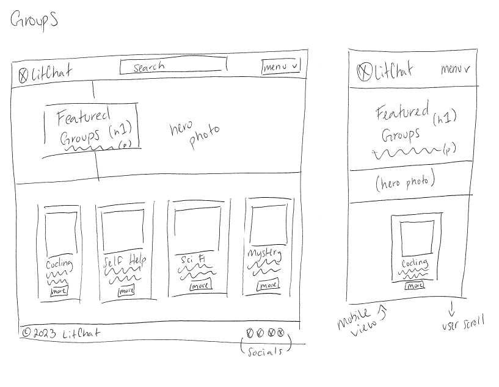
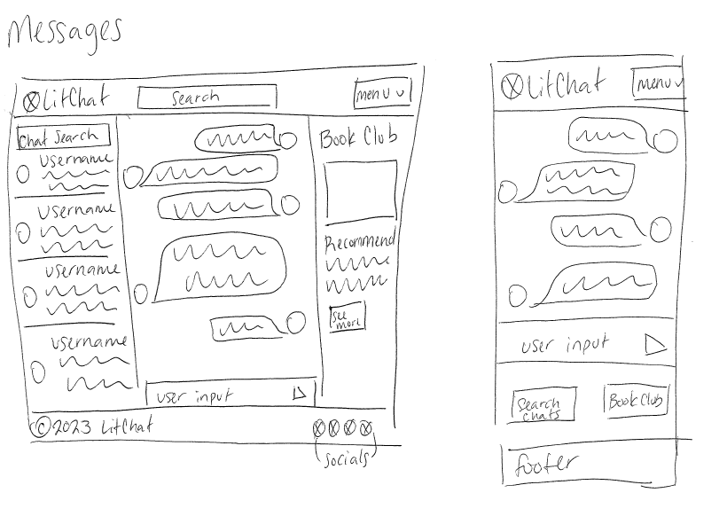
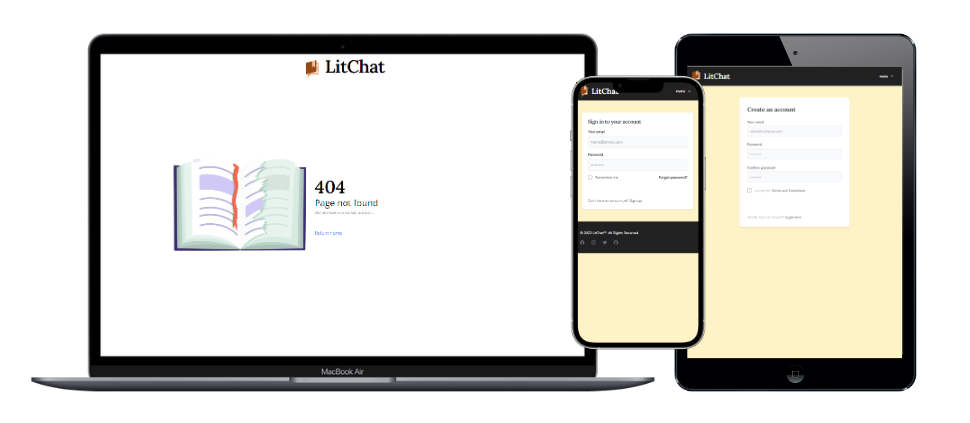
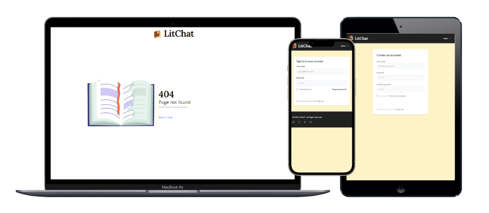

LitChat
A website where users can discuss and exchange ideas about literature
Project Overview
Challenge
LitChat LitChat is a dynamic and engaging website designed for literature enthusiasts to connect and share their thoughts on their favorite books. It serves as a virtual gathering place where users from all over can come together to discuss and exchange ideas about literature.
Objectives
- Design the user interface for Litchat that is user-friendly and accessible from a desktop or mobile device
- Design a logo for LitChat to use on the website and branding material
Project Scope
Front-End Web Development, User Interface, and Branding
Tools
Figma, HTML5, CSS3, JavaScript, React
Role
Sole UX / UI Designer and Developer and Front-End Web Developer
Team
Duration
2 Weeks (15 Class Hours, 30 Independent Hours)
Design Process
Research
- User Research
- Competitor Analysis
- Gather Insights
- Market Research
- Define Project Goals
- User Personas
Design
- Wireframes
- Visual Mockups
- Task Flow
- Branding
- Responsive UI
Prototyping
- Mockups
- Realistic Content
- Feedback
- Internal Testing
- Review
Testing
- Usability Testing
- Defined Tasks
- Collect Data
- Improve User Experience
Research
Research Plan
Researching gives me a better understanding of the target users, their behaviors, needs,
motivations, and prefereces. By researching first, I am able to uncover users' challenges and
frustrations to create a more empathetic and user-friendly solution.
Creating a research plan is crucial to provide effective guidance for responsive design and
development.
The research plan for LitChat includes a project background, research questions,
assumptions, methodologies, participants, and timeline. A complete research plan can be found
in my research plan.
Research Goals
- Evaluate the existing market landscape and identify potential differentiators for LitChat.
- Gain a deep understanding of the target audience's demographics, preferences, motivations, and behaviors related to book reading and online communities.
- Conduct a competitive analysis to assess competitors' strengths and weaknesses and identify opportunities for differentiation.
- Investigate how users currently manage their book lists and explore their preferences for organizing and tracking books.
- Explore users' experiences in finding books they want to read, including discovery methods, sources of recommendations, and challenges they face.
Assumptions
- LitChat’s primary user base consists of avid book lovers
- People will actively discuss books with other people they do not know
- People want to find books to read online
Methodologies
- Secondary Research: Market Research, Competitive Analysis
- Primary Research: User Interviews
Secondary Research
Market Research
Market research is crucial for design as it helps to understand the competitive landscape, user expectations, and market trends. It provides valuable insignts into user needs, preferences, and behaviors. Researching allows me create user-centered solutions by identifying gaps, opportunities, and potential differentiators. This ensures that the designs are not only aesthetically pleasing but also aligned with business objectives and capable of delivering a superior user experience.
Book Industry & Platforms
Print book sales figures have improved and unit sales now consistently surpass 700 million per year. Print also remains the most popular book format among U.S. consumers, with 65 percent of adults having read a print book in the last twelve months. In 2021, U.S. book revenue grew across multiple categories, and despite the gains in digital book sales, print remains dominant. (Statista)
Demographics
- The 65+ age group recorded the highest population of print book readers: 45.1%
- The 45-54 age group contains the highest population of non-readers: 60.9%
- Males recorded a slightly higher population of non-readers compared to females: 51.4% (Test Prep Insight)
Reading Habits
On average, the daily time spent reading among American adults was just over 20 minutes in 2020. This marked an increase from previous years and was driven by the hike in media consumption during the COVID-19 outbreak. Indeed, in 2021, time spent reading was back to pre-pandemic levels. Meanwhile, the way U.S. consumers read is changing, and will continue to do so as media formats and devices evolve. (Statista)
Competitive Research
Goodreads
Strengths
- Extensive book database and recommendations.
- Book club features and challenges.
- Robust review system and integration.
- Connect with favorite authors.
- Large community for engagement.
Weaknesses
- Outdated interface, limited customization.
- Spoilers in reviews.
- Privacy concerns, data sharing. (Amazon)
- Limited content curation, recommendations.
- Limited moderation, spam issues.
LibraryThing
Strengths
- Advanced cataloging for personal collections.
- Active community, discussion groups.
- Integration with bookstores, libraries.
- Discover niche, lesser-known books.
- Customizable book recommendations.
Weaknesses
- Less appealing user interface.
- Smaller user base compared to other platforms.
- Limited e-reading platform integration.
- Higher learning curve for users.
- Delays in updating book database.
Audible
Strengths
- Vast audiobook library, extensive selection.
- High-quality production, professional narration.
- Convenient, on-the-go listening.
- Appealing, easy-to-navigate interface.
- Membership benefits, monthly credits, discounts.
Weaknesses
- Expensive without membership.
- Limited control over narration.
- Audiobooks only, no ebooks.
- No community engagement features.
- Privacy concerns, data sharing. (Amazon)
User Personas
Using the data from the market research, I created three potential personas that represent Litchat users. These personas helped me identify suitable people for interviews.
Book Enthusiast
- Age: 30
- Occupation: Librarian
- Interests: Reads a wide range of genres, enjoys discovering new authors
- Motivation: Seeks book recommendations and discussions with fellow readers
- Usage: Actively participates in book clubs, writes detailed reviews
Casual Reader
- Age: 40
- Occupation: Marketing Executive
- Interests: Prefers popular fiction, mysteries, and thrillers
- Motivation: Wants to keep track of read books, finds popular recommendations
- Usage: Rates books, uses the reading challenge feature, explores best-seller lists
Aspiring Writer
- Age: 25
- Occupation: Teacher
- Interests: Reads literary fiction, classics, and books on writing craft
- Motivation: Seeks inspiration, learns from established authors' works
- Usage: Follows favorite authors, participates in writing groups, explores writing-related discussions
Primary Research
User Interviews
Now that I have an understanding of the market and people who may be interested in using
LitChat,
I created a Google Form document to interview real book-lovers to use in my primary
research.
There were a total of 5 participants who answered questions about their reading
preferences and
helped me gain valuable insight to use in the planning and development of LitChat.
Assumptions Validated
- LitChat’s primary user base consists of avid book lovers
Validated - 5/5 people answered "yes" to the question "Do you love books?"
- People will actively discuss books with other people they do not know
Not Validated - 1/5 people answered "no" to the question "Would you discuss books with other people you do not know online?"
- People want to find books to read online
Validated - 5/5 people answered "yes" to the question "Do you regularly search for new books online?"
Empathy Map
Using the data gathered from interviews and personas, I created empathy maps and pain/gain charts using FigJam to gain a deeper understanding of users' needs, thoughts, emotions, and behaviors in order to design LitChat in a way that truly resonate with them.
Insights
- Users value active engagement in book discussions and recommendations.
- Users seek convenience in managing their reading lists and accessing popular book recommendations.
- Users find new books from their friends and family.
Needs
- Users need a platform that provides a diverse range of book recommendations and an active community for meaningful discussions.
- Users need a platform that offers effortless book management, popular recommendations, and access to ratings and reviews from fellow readers.
- Users need an active and engaged community of readers and writers to connect, share recommendations, and participate in discussions.
User Persona
With a better understanding of the users wants and needs, I created a detailed persona
incorporating demographics, behaviors, goals, motivations, and pain points as a way to
better
inform the development of LitChat.
Creating a detailed persona hels me understand the users' needs and preferences so I can
better
create visually appealing interfaces that enhance user satisfaction and engagement.
Alex Thompson
- Age: 28
- Occupation: Software Developer
- Background: Alex is a tech-savvy individual who loves exploring new technologies and gadgets. They are an early adopter of new software and enjoy testing and providing feedback on various platforms. Alex is an avid reader and prefers science fiction and fantasy genres. They often read during their commute or in their free time to relax and escape into different worlds.
- Motivation: Alex wants to find a convenient and user-friendly online platform for discovering, organizing, and discussing books. They are looking for a platform that provides personalized book recommendations based on their reading preferences and connects them with a community of like-minded readers.
- Goals:
- Easily discover new books based on their interests.
- Keep track of books they have read and want to read.
- Connect and engage with other readers through discussions and recommendations.
- Explore author profiles and updates.
- Provide feedback and contribute to the platform's improvement.
- Challenges:
- Limited time to explore new platforms due to work commitments.
- Preference for a seamless and intuitive user interface.
- Desire for accurate and relevant book recommendations.
- Desire for accurate and relevant book recommendations.
- Finding a community that aligns with their reading interests and preferences.
- Ensuring privacy and data security while using the platform.
Strategy
Point-of-View & How Might We
To reframe the problem statement into actionable, solution-oriented questions, I created a table in Excel using the insights and needs gathered in research. This table allows me to use a brainstorming environment to come up with creative solutions by asking questions.
Application Map
The next step in the process was to create an application map. This provides an overview of the structure of the application's architecture and navigation. I created an application map using FigJam to allow me to visualize the user journey.

Design
Task Flow
To understand how the user will get from point A to point B, I created a task flow using FigJam. This example uses our persona, Alex, who wants to share their thoughts about a coding book they read.
Wireframe
Sketches
After creating the LitChat Requirements document outlining the design requirements for the project, I was able to begin sketching what the pages would look like. The first drafts were done on paper and pen, which allows me to quickly visualize my ideas before putting everything into a digital format.
 



Mid-Fidelity Wireframes
After creating the sketches and getting a better idea of the layouts, I began to bring the sketches to life using Figma.
Branding
To start the branding journey, I brainstormed ideas for what to call LitChat. Since this project
was contructed from scratch, every aspect required careful consideration. Some of the first
ideas for the website name included Novel Connect and ReadTogether. Ultimately I felt LitChat
encapsulated the essence of the website, combining its literary/book-oriented nature and
messaging/chat functionalities.
The next step was to create a
mood board using Pinterest which I divided into sections for art, color scheme,
typography, and logo inspiration. I wanted to get a feel for what LitChat would become and
create an initial impression that would be positive for the user.
I used my knowledge of color theory and chose to focus on yellow and brown for LitChat's design.
The colors are reminiscent of old, leather-bound books with worn pages and are intended to
create a nostalgic feeling for the user.
In color theory, yellow is often associated with positivity, energy, and warmth. It can evoke
feelings of happiness, optimism, and friendliness. Brown is a warm, earthy color that often
conveys a sense of stability, reliability, and warmth. It can evoke feelings of comfort,
security, and trust.
Since LitChat will be a community of readers, having a sense of warmth and trust is important.
Logo Design
Using ideas from the mood board as inspiration, I began sketching out my logo ideas for LitChat. Using concepts of the books and incorporating the cartoon-style chat bubble was a challenge, but I landed on a design that I felt was visually appealing and memorable. Due to time constraints, I was only able to digitize one design for use in the development.
Final Website Design
After meticulously adding the finishing touches, I proceeded to develop the web pages for LitChat utilizing HTML, CSS, Tailwind, and React. Employing these technologies, I ensured that the website is not only visually appealing but also fully operational in React. It is mobile-responsive and now primed to seamlessly retrieve information from the server to cater to the needs of its users. I believe I made significant progress in translating the design from the wireframe into reality, and given a little extra time, I am confident it would have been flawless.
 

Closing Thoughts
What I learned...
Developing a comprehensive end-to-end application within a mere two-week timeframe is an
exceptionally challenging task. Even splitting the group project and handling everything but the
server-side interaction myself was nearly impossible. LitChat presented itself as a substantial
undertaking, demanding an immense amount of effort. Unfortunately, LitChat did not successfully
launch on Heroku as the group project required. However, I do believe that I fulfilled the
objectives outlined for my portion of the project. Given more time and dedication I have no
doubt the group project would have successfully launched.
If I had more time, I would love to develop some of the functionality and sprinkles that were
initially discussed. Who knows-- maybe one day I will revisit LitChat, but for now with my part
of the project completed, it sits firmly on the shelf, awaiting its potential
revival.